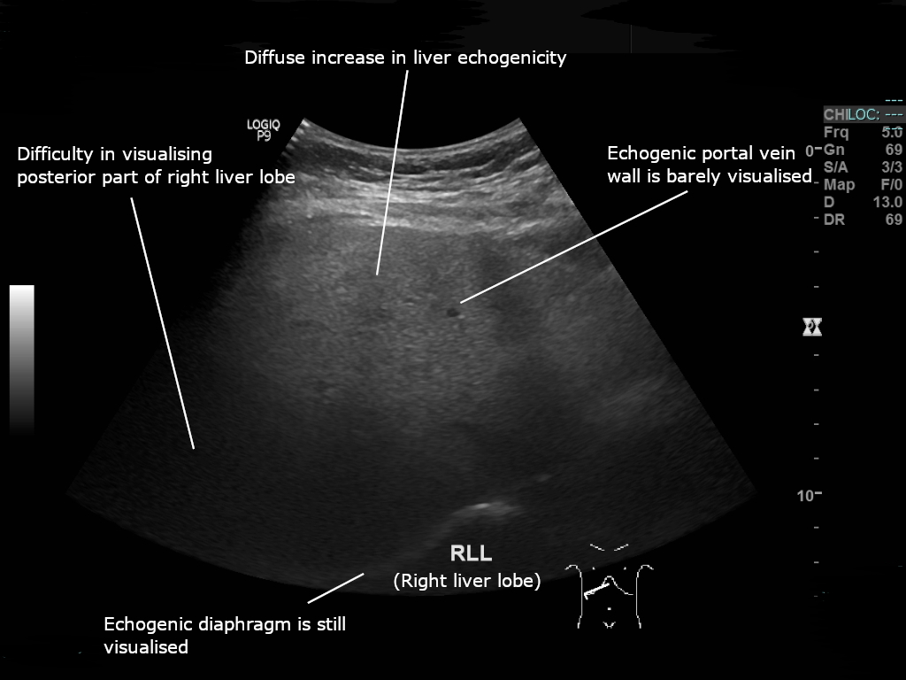

Ficha del catálogo
Esteatosis hepática
- Sistema
- Digestivo
- Modalidad
- US
- Región
- Hígado
- Dificultad
- Básico
Es la acumulación anormal de triglicéridos dentro de los hepatocitos, hoy englobada dentro de la enfermedad hepática esteatósica asociada a disfunción metabólica. Se relaciona con obesidad, diabetes tipo 2, dislipidemia y consumo de alcohol, y también con fármacos y desnutrición. La mayoría de los casos son asintomáticos, pero una fracción progresa a esteatohepatitis, fibrosis y cirrosis.
Técnica
El ultrasonido es el estudio inicial por su disponibilidad y bajo costo. Se compara de forma sistemática la ecogenicidad del parénquima hepático con la de la corteza renal derecha en un mismo plano y con la misma profundidad, evitando modificar la ganancia entre ambas mediciones. La resonancia con secuencias en fase y fuera de fase, o la cuantificación de fracción de grasa, permite medir el contenido graso de forma objetiva.
Qué observar
- Aumento difuso de la ecogenicidad hepática respecto a la corteza renal
- Atenuación del haz ultrasónico con mala definición del diafragma y de los segmentos profundos
- Pérdida de nitidez de las paredes de las ramas portales intrahepáticas
- Áreas focales de respeto graso en localizaciones típicas: Lecho vesicular, hilio y segmento IV anterior
- Áreas focales de infiltración grasa con bordes geográficos y sin efecto de masa
- Signos asociados de hepatopatía avanzada, como contorno nodular o esplenomegalia
Hallazgos
El hígado aparece brillante, aumentado de tamaño y con atenuación posterior progresiva del sonido. En tomografía sin contraste la densidad hepática desciende, y una diferencia con el bazo mayor de 10 unidades Hounsfield en menos, o una densidad hepática por debajo de 40 unidades, apoya el diagnóstico. En resonancia el signo más específico es la caída de señal del parénquima en la secuencia fuera de fase respecto a la secuencia en fase, que refleja la coexistencia de grasa y agua dentro del mismo vóxel.
Perlas
Las áreas de respeto graso son la principal fuente de falsos positivos de lesión hepática: Aparecen en sitios anatómicos predecibles, sobre todo adyacentes al lecho vesicular y en el segmento IV junto a la fisura del ligamento falciforme, tienen bordes geográficos, no desplazan vasos y no producen efecto de masa. Reconocer estos rasgos evita estudios y biopsias innecesarias.
Diagnóstico diferencial
- Fibrosis hepática o cirrosis
- Textura gruesa con contorno nodular y signos de hipertensión portal (la elastografía muestra rigidez elevada).
- Hepatitis crónica
- Ecogenicidad menos brillante sin atenuación posterior marcada, con alteración predominante de transaminasas.
- Metástasis o lesiones focales
- Bordes redondeados, efecto de masa, desplazamiento vascular y realce propio con contraste.
- Depósito de glucógeno o hemocromatosis
- En resonancia el hierro reduce la señal en la secuencia en fase, comportamiento inverso al de la grasa.
- Infiltración por linfoma
- Hepatomegalia con lesiones hipoecogénicas o afectación difusa acompañada de adenopatías.
Simuladores
- Ganancia excesiva del equipo, que crea falsa hiperecogenicidad hepática
- Enfermedad renal crónica con corteza renal ecogénica, que anula el contraste hepatorrenal
- Infiltración grasa focal que simula una masa hepática
Por modalidad
- US
- Detecta y gradúa la esteatosis de forma cualitativa; los índices de atenuación permiten una estimación cuantitativa
- TC
- Diagnóstico sencillo en el estudio sin contraste midiendo la densidad hepática y comparándola con el bazo
- RM
- Es el método más preciso y reproducible para cuantificar la fracción de grasa y para diferenciar grasa de hierro
Protocolo
Ultrasonido con transductor convexo, comparación hepatorrenal en un mismo campo y ganancia constante. En tomografía basta el estudio sin contraste con regiones de interés en varios segmentos hepáticos y en el bazo. En resonancia se utilizan secuencias eco de gradiente en fase y fuera de fase y, cuando se dispone, mapas de fracción de grasa con corrección de múltiples ecos.
Clasificación
En ultrasonido se emplea una graduación en tres grados. El grado 1 o leve muestra un discreto aumento difuso de la ecogenicidad con diafragma y paredes portales aún visibles. El grado 2 o moderado presenta mayor brillo con visualización deficiente de las paredes portales y del diafragma. El grado 3 o grave muestra atenuación marcada que impide ver el diafragma, los vasos intrahepáticos y los segmentos posteriores. Esta graduación es subjetiva y depende del operador y del equipo.
Errores frecuentes
- Confundir el respeto graso focal con una lesión sólida y generar estudios adicionales innecesarios
- Afirmar que el hígado es normal cuando existe esteatosis leve y la corteza renal también está ecogénica
- Asumir que la esteatosis excluye fibrosis, ya que ambas coexisten con frecuencia y requieren valoración de rigidez

esteatosis higado graso contraste hepatorrenal fuera de fase respeto graso metabolico ultrasonido